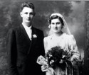
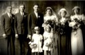

The Kleinsorge Family Tree - Family Card
The Kleinsorge Family Tree - Family Card
KLEINSORGE, Vincent Matthew(Jul 19, 1887 - May 26, 1962)LICHTENAUER, Henry Stephen(Feb 15, 1889 - Mar 1, 1975)
WESTHUSING, Mamie(Aug 18, 1891 - Jun 5, 1952)GOTH, Anna Louisa(Nov 5, 1885 - Aug 22, 1966)
m. Jun 1, 1938, Germantown, Missouri


b. Jan 22, 1917, Westphalia, Kansas
d. Aug 8, 1989, Lenexa, Kansas
ado.

b. Apr 19, 1916, Germantown, Missouri
d. Nov 3, 1988, Lenexa, Kansas
ado.
Children
KLEINSORGE, Elizabeth Joan(Feb 25, 1939 - )
> KLEINSORGE, LeRoy Carl(Oct 9, 1940 - )
KLEINSORGE, Jerry Lynn(Nov 2, 1942 - )